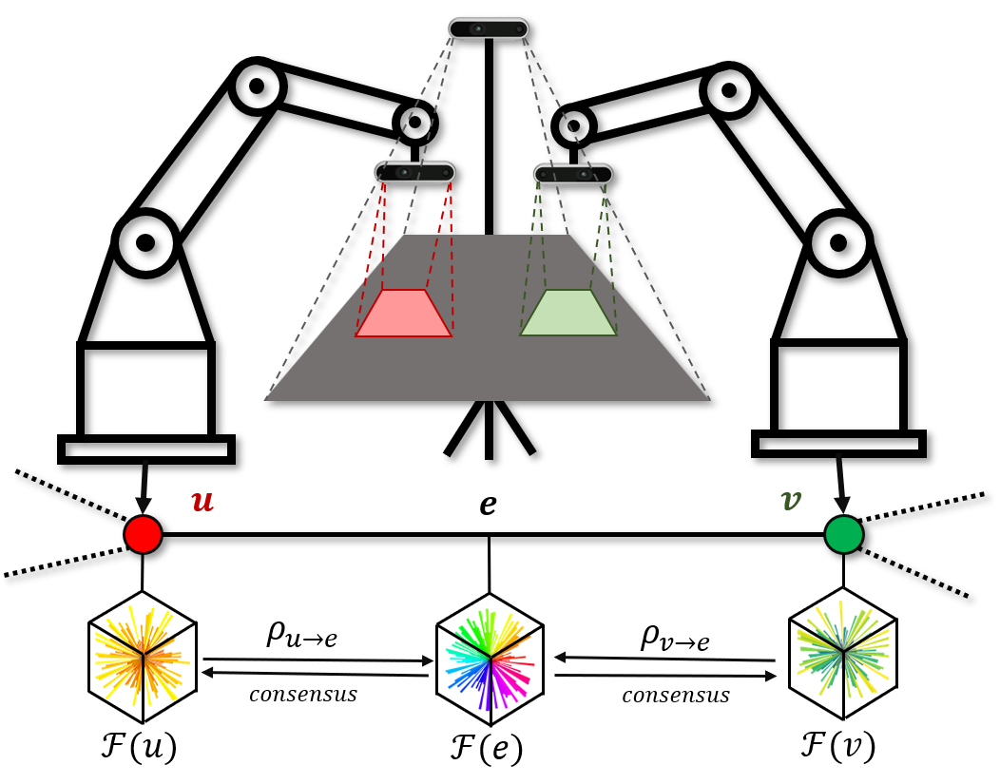
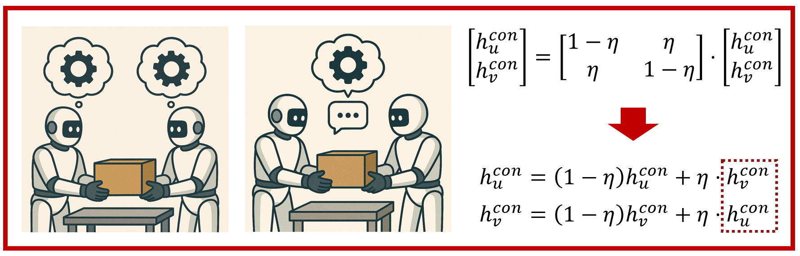
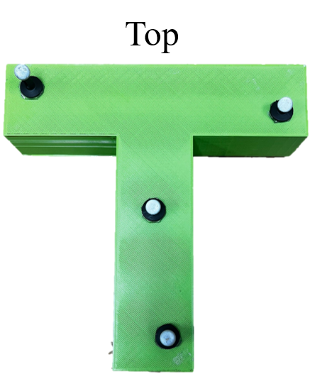
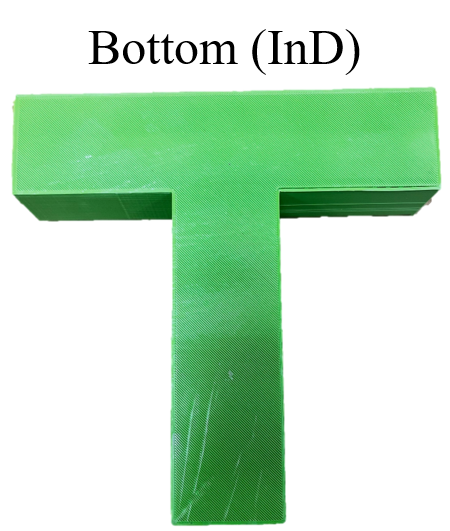
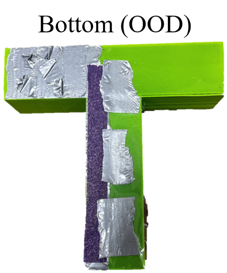

1National University of Singapore
2Stanford University
 We present Latent Theory of Mind (LatentToM), a decentralized diffusion policy architecture for collaborative robot manipulation. Our policy allows multiple manipulators with their own perception and computation to collaborate with each other towards a common task goal with or without explicit communication. Our key innovation lies in allowing each agent to maintain two latent representations: an ego embedding specific to the robot, and a consensus embedding trained to be common to both robots, despite their different sensor streams and poses. We further let each robot train a decoder to infer the other robot's ego embedding from their consensus embedding, akin to ``theory of mind'' in latent space. Training occurs centrally, with all the policies' consensus encoders supervised by a loss inspired by sheaf theory, a mathematical theory for clustering data on a topological manifold. Specifically, we introduce a first-order cohomology loss to enforce sheaf-consistent alignment of the consensus embeddings. To preserve the expressiveness of the consensus embedding, we further propose structural constraints based on theory of mind and a directional consensus mechanism. Execution can be fully distributed, requiring no explicit communication between policies. In which case, the information is exchanged implicitly through each robot's sensor stream by observing the actions of the other robots and their effects on the scene. Alternatively, execution can leverage direct communication to share the robots' consensus embeddings, where the embeddings are shared once during each inference step and are aligned using the sheaf Laplacian. While we tested our method using two manipulators, our approach can naturally be extended to an arbitrary number of agents. In our hardware experiments, LatentToM outperforms a naive decentralized diffusion baseline, and shows comparable performance with a state-of-the-art centralized diffusion policy for bi-manual manipulation. Additionally, we show that LatentToM is naturally robust to temporary robot failure or delays, while a centralized policy may fail.
In this section, we present the details of our approach (LatentToM) during both the training and inference stages, along with the experimental results.
In this part, we describe the design of the loss function in the training phase to achieve consensus embedding learning based on sheaf theory, incorporating the Theory of Mind (ToM)-inspired constraint and the directional consensus mechanism.
To mitigate such decision-making deviations caused by local inconsistencies, we introduce the sheaf Laplacian as an online adjustment mechanism during inference. This method provides a lightweight, model-agnostic “consensus repair” process that does not require modifying the trained model. By iteratively updating the consensus embeddings of the two nodes, the sheaf Laplacian gradually brings them closer together, promoting consistency and behavioral stability. Specifically, we use a classic bidirectional consistency synchronization operator:
It is worth noting that one-step information exchange (communication) between the two nodes is required per inference.
Two experiments were conducted in this section, with the experimental design and results detailed below.
We designed two experiments to evaluate the performance of our LatentToM. Task 1: Push-T. Unlike the traditional Push-T task, which only requires pushing the T-shaped block to a target location, our version imposes an additional constraint: the block is expected to maintain its initial orientation throughout the movement. This demands precise coordination between the two arms to apply force symmetrically and prevent rotation, which is illustrated by the left figure. Task 2: Pouring coffee beans. In this task, the two arms start from fixed positions, collaboratively pour coffee beans from a cup into a small pot, and then return to a safe resting position. Since the task does not have a fixed target pose for the arms, success depends on the arms correctly interpreting each other’s intentions in real time. A misalignment in timing or trajectory can result in spillage, making the task a clear example of action interdependence and requiring tightly coupled coordination. As shown in the right figure.
   In Task 1, we explored each method's ability to collaborate when confronted with a T-block that is visually in distribution (InD) (as shown in Top) but has out-of-distribution (OOD) asymmetric dynamics (as shown in Bottom OOD). More specifically, the underside of the block was modified so that each side would have distinct coefficients of friction, thereby exacerbating any error due to poor coordination. The results are shown below.
Representative rollout results for Task 2 (coffee bean pouring). As shown in the figure, although both NNDP and NCDDP resulted in failures, NNDP clearly spilled more coffee beans than NCDDP (red area vs. blue area). For our method, Latent w/o SL exhibits an issue where, after completing the task, the arm may holding the cup fails to return to the resting position and remains in a risky posture, potentially causing additional spillage (highlighted in the yellow area). In contrast, DDP w/ SL successfully returns to a safe resting position, as indicated by the green area. However, for the same fully successful (FS) cases, CDP often completes the task more quickly.
@article{he2025latent,
title={Latent Theory of Mind: A Decentralized Diffusion Architecture for Cooperative Manipulation},
author={He, Chengyang and Camps, Gadiel Sznaier and Liu, Xu and Schwager, Mac and Sartoretti, Guillaume},
journal={arXiv preprint arXiv:2505.09144},
year={2025}
}If you have any questions, feel free to contact Chengyang He, Gadiel Sznaier Camps, and Xu Liu. If you are interested in our code implementation, please visit https://github.com/StanfordMSL/LatentToM.